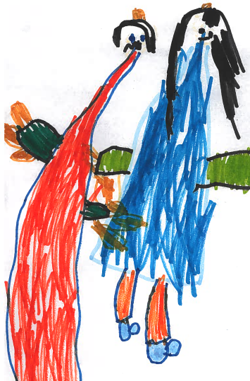

|
 |
Damian Clarke |
||||
|
|
|
| Home | Research | Computation | Books | Teaching | CV |
|---|
Welcome to my home page. I am a researcher and Associate Professor of Economics at The University of Exeter, and The University of Chile. My research focuses on maternal and child health, and family fertility decisions. In particular my papers examine the impact of public programs on maternal mortality and morbidity, early life health outcomes for children, and the determinants of parental investment in children. I am also interested in applied microeconometrics and computation. To find my publications and work in progress, please see the research section of this site.
My research code is open source. All code on this site is released under a GNU copyleft licence, meaning it is free for you to change and circulate. All sole authored writing to which I hold copyright is released under the Creative Commons. Journal articles on the research section of this site are generally Open Access. Replication materials for my empirical papers are available on the research section of this site. On the computation page I make available a number of open-source software routines which implement microeconometric methods. Please refer to the computation page for a number of further details and notes. Version controlled copies of these are also available on my github page.
I am affiliated with IZA Institute of Labor Economics, the Rockwool Foundation, Berlin, the Millennium Institute for Research in Market Imperfections and Public Policy, the Essex Research Centre on Micro-Social Change, the Instituto de Estudos para Políticas de Saúde, the CAGE Research Centre at Warwick, and the Centre for the Study of African Economies, Oxford. Details of these organizations are available at the links provided.
I have a new textbook out in 2026 (see below). If you are interested in the details of this textbook, please see the online accompanying page with much relevant code and data. To purchase the book, please refer to the publisher website.
Any comments or queries are welcome. I can be reached on email at dcc213@exeter.ac.uk or dclarke@fen.uchile.cl.